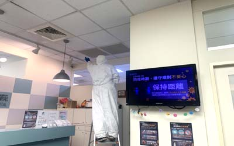
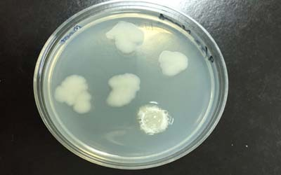
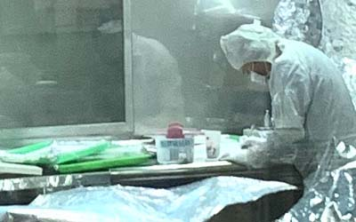

新冠肺炎(COVID19)(武漢肺炎)
| 新冠肺炎病毒特徵:在一般環境下,適合中低溫存活,依照不同濕度,及附著物體上,最有利環境下可長達數日存活,在室溫28度以上,其病毒會隨時間衰減死亡 |
| 變種:其病毒自2019年發現起.已經經歷多次變種,使其傳染力更強 |
| 飛沫感染傳播方式:飛沫傳染新冠肺炎主要傳播之一,此病毒在空氣傳播是最快速有效途徑，通常發生在人多擁擠、通風不良，像是咳嗽,打噴嚏.說話.(尤其大聲說話) |
| 氣溶膠感染傳播方式:此為武漢肺炎傳播途徑之一,但此方法傳播為極少數,雖然新冠肺炎病毒氣溶膠可在空氣中停留更久 |
| 接觸感染傳播方式:被消毒物品場所.空間.環境因子,污染物之量素, |
| 劑量:藥劑之劑量,其配比方式.也取決空間及污染量素, |
| 基質:糖.礦物質.好氧.厭氧(有些微生物是不需要氧氣,)氮...等等.細菌病毒養分或保護體. |

避免接觸感染方法
| 最佳方法消毒最困難處在於其結果判斷,在室內人類活動空間上,是無法能達到100%細菌滅死之消毒,這是必需了解的,消毒最終結果在於讓其無再茲生環境之條件,病源菌體其數量降低,並且其量無法對人類造成危害,我們人類自身有一套免疫系統,消毒結果是應該達到在體弱時其病菌對人体其量,無法造成危害為基礎,或是更高等級之系統,這是必需先定義,才能去判斷消毒之結果 |
| 溫度辦別: |
| 嗜冷菌(Psychrophilre):生長期大約分布10-20度間,如李斯特菌,在零下10幾度還可存活數月不死,它是以食物傳染為媒介. |
| 嗜溫菌(mesophiles):生長期大約分布20-40度間,多數致病菌都在此範圍,然它能夠活動溫度範圍大約可在5-50度間,以最常見大腸桿菌Escherichia coli就是此菌 |
| 嗜熱菌(hermpphiles)大約分布50-60度間,也有超嗜熱菌.可在122度存活,許多為古細菌,在實驗滅菌有效性,會以嗜熱桿菌芽孢做微生物指示劑 |

簡易概念
| 如欲消毒 或是滅菌之物體表面有油.污, 且只以噴霧藥劑方式其效果會很差, 因油.污底下之微生物會繼續生長與繁殖, 故需先擦淨且注意清理方法與藥劑成份.除了微生物, 是否有其它生物如蚊.鼠.犬等會攜帶與傳播病原, 在整體建物施工上,消毒/滅菌/抗菌與病媒處理須做搭配方為全方位之傳染病防治. |
| 部份消毒/滅菌劑可相互混合或搭配以增加其效果, 且降低微生物產生抗藥性之可能, 如10%的碘液+70%的乙醇為碘酒, 比碘液或乙醇之效果佳; 藥劑可依藥劑特性與安全性使用於不同空間.物體.環境條件之標的物. |
| 是否菌類消滅了卻帶來引響更久的環境污染等問題, 目前最能知道其效果之方法為現場施做前後以檢測儀側量菌量與化學物質量等.如使用有毒藥劑,須將其氣體排出.避免二次汙染 |
| 在食品.藥場之消毒則需著重於制程及制品不被消毒要劑污染,在消毒前需了解其環境衛生漏洞及作業方法,方可達到較優效果 ,對於部分特殊薰蒸法,在消毒時,需要穿載高效能呼吸防護器及防護衣,因為許多是有劇毒藥劑 |